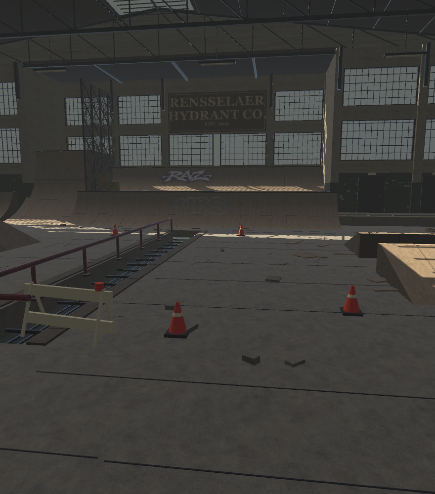
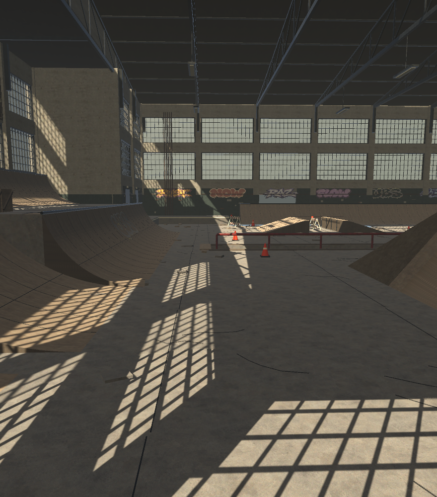
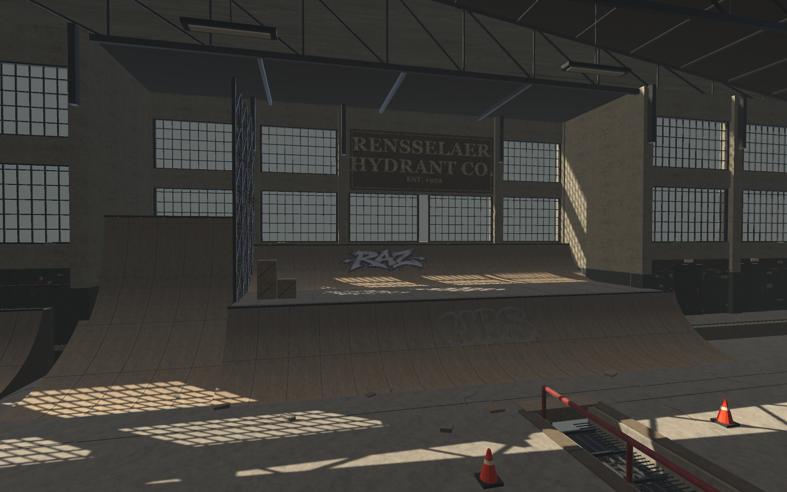
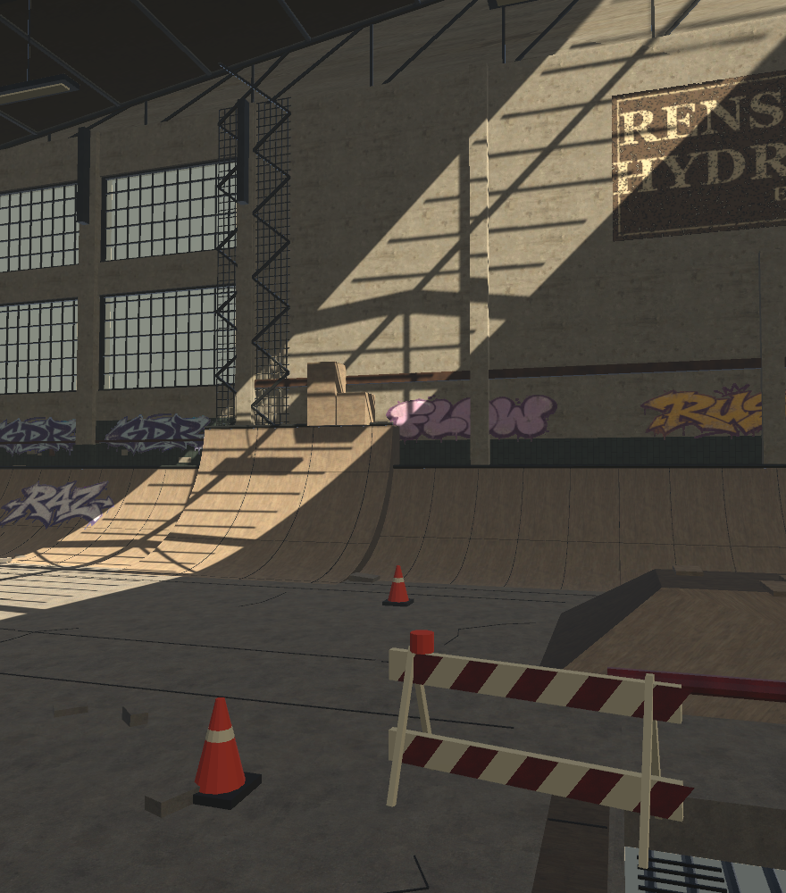
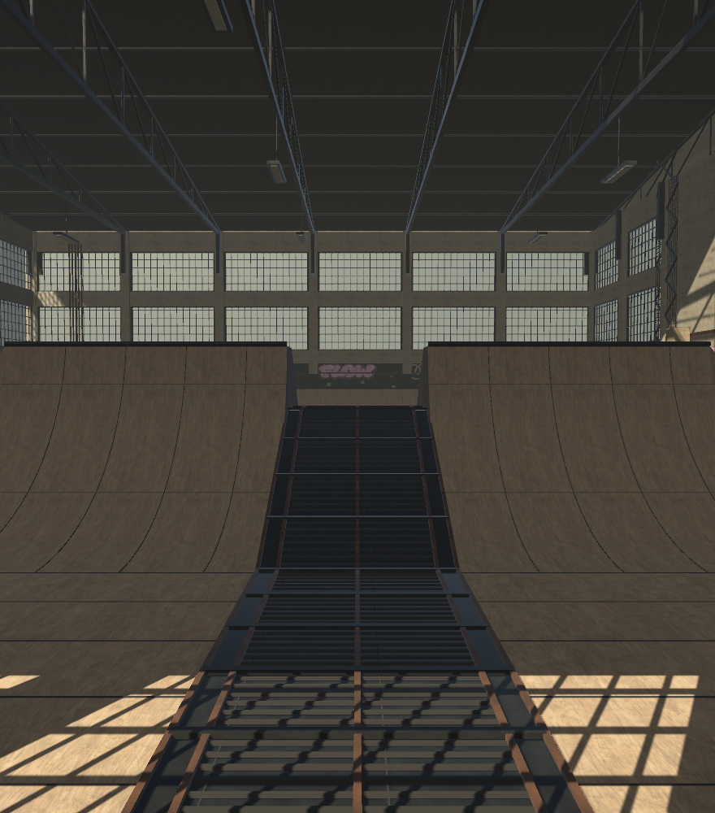
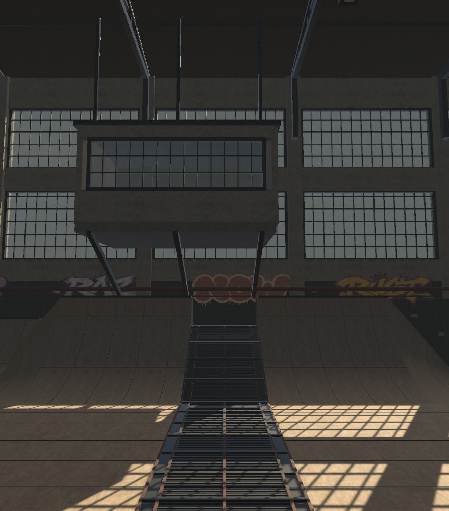
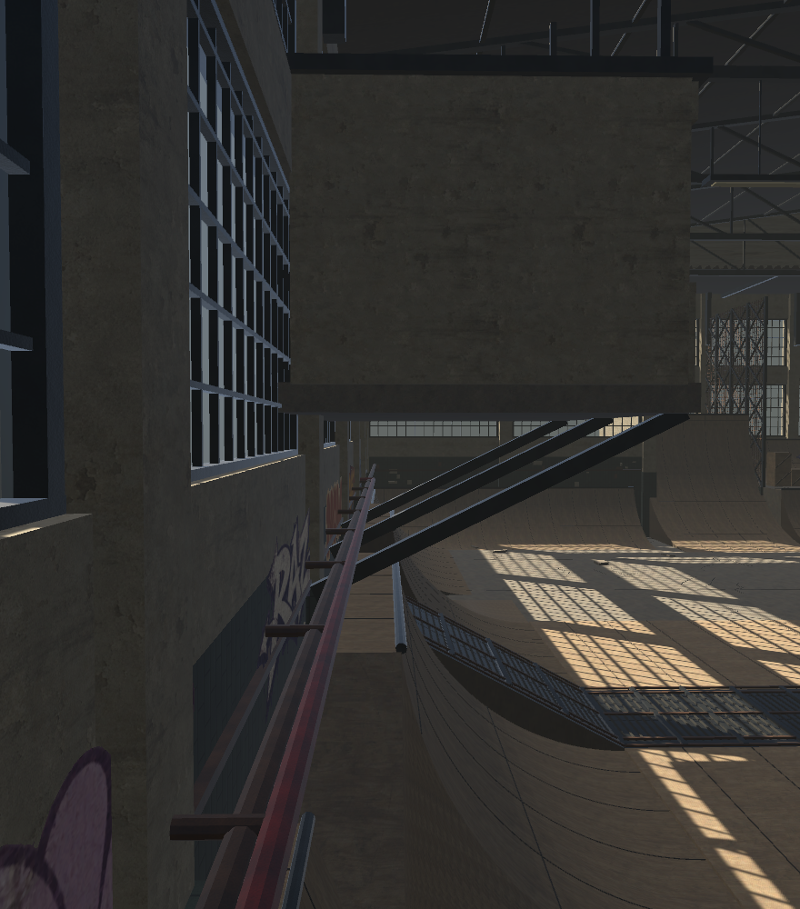
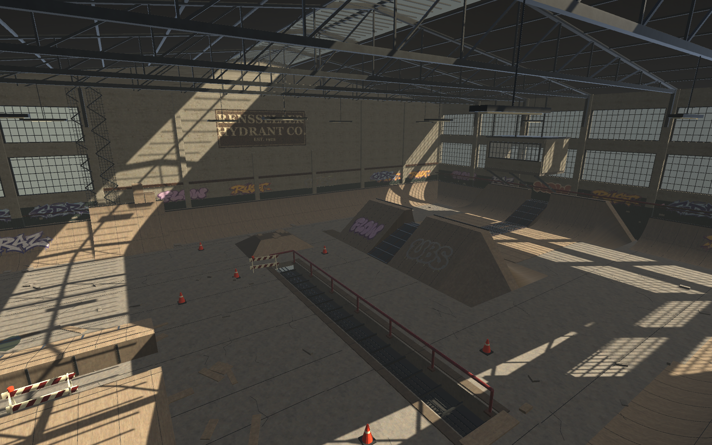

WAREHOUSE / ROUTE AUDIT / 04
从 1:32 的两个起点，沿玩家路线重新核对
之前确实没有对齐。此前把两端相似的厂牌认成同一面墙，造成凹入平台放反；半管方向和金属通道归属也判断错误。当前场景已经修正这些结构关系。下面按行进顺序展示证据与重建视角，不把几何检查通过等同于“已经一模一样”。
本轮重新暂停查看了 1:29–1:54 的连续行进段，并复看 2:18–2:26、2:43、2:53–2:54 等反向视角。主行进段约每 1–3 秒取样，转身位置另加补帧；不是逐一检查视频的所有编码帧。完整观察条目见 本轮逐画面记录。
先固定方向，避免再次把两面墙混淆
这里的“北”仅指 Unity 的 +Z，“东”指 +X，不是原游戏公布的方位。南北两端都有厂牌；南端是 UBS 前坡、平台与后坡，北端是实墙、铁笼和箱子所在的局部高坡。
示意图表达邻接关系，不是测绘平面。虚线橙色路线连接已观察到的节点，不代表逐帧恢复出的精确运动轨迹。
① 1:32 左屏：橙衣玩家从哪里出发
打开 1:32。关键组合是：左前红扶手、右前双跳台、前方 UBS 低前坡、其后厂牌与后坡、左侧窄高坡、右侧双门低台。因此起点在大厅西半部，位于沟槽西侧，朝南端凹口方向。当前标记约为 (-9.4, 0.05, 9.5)，朝向约 172°；这是重建坐标，不是从原游戏读取的位置。


仍可见差异：厂牌及窗格比例、起点到设施的距离、红扶手在画面中的长度没有完成精确相机标定。这里验证的是同一组设施的方向和先后关系。
① 1:32 右屏：黑衣玩家在半管南侧走廊
此处不是半管内部。画面左边是建筑南墙的连续弧坡，右边是半管外侧坡面。他朝西行进，1:34–1:35 向左驶上南墙，再转回大厅。当前标记约为 (17, 0.05, -13)，朝向 272°。

② 1:35–1:36：先到 UBS 前坡，再看见后方平台
1:35 左屏仍向起点正前方行进；1:36 上坡与转身补帧把前坡、后坡和平台区分开。现在把整套凹口移到南端，保留可进入的水平台面、左侧独立高坡开间和右侧 L 形门台，并移除了挡在开间前的旧墙。


③ 1:39–1:42：转身后遇到的是另一端的箱子高坡
1:39 两个玩家接近铁笼和堆箱附近的局部高坡；左屏此前已经从 UBS 前坡掉头。这里的厂牌下是实墙与涂鸦带，旁边是 KDR/GERN 等标记，不能与南端 UBS/RAG 平台合并。已恢复北端实墙、长弧坡、局部高唇和箱子。


④–⑤ 1:46–1:54：墙边红管 → 半管 → 金属带向西出场
1:46 左屏沿东墙红管前进，1:52 沿金属带看向西侧大厅，随后驶出至中央设施区。金属不是南端两条独立下坡，而是半管中间连续的一条带：西侧外坡 → 低金属坡顶 → 内侧斜坡 → 半管平底 → 办公室一端。木质坡面被涂成红蓝色时，中央金属仍为灰色，这是识别它的重要依据。


半管的滑行方向现为东西向，唇口沿南北向。金属带宽约 2.8 m、低坡顶约 2.15 m，木坡高约 3.45 m；这些数值仍是估值，不能当作原关卡尺寸。
⑥ 反向补证：办公室悬在金属通道东端上方
2:18–2:19 和 2:24–2:26 提供通道反向观察；2:54 右屏 更清楚地显示白色办公室、其下墙面与半管坡面。办公室应位于东侧上方，不能把通道当成指向另一面入口墙的设施。这些补帧是在浏览器中直接观察，没有另存成原视频图片。


修正后的全场关系

前景中央沟槽；右侧半管与连续金属带；办公室在其东端上方；远端厂牌为北端实墙厂牌。起点面向的南端凹口在相机后方。
验证范围与仍然存在的差异
| 项目 | 当前状态 |
|---|---|
| 两端厂牌与凹入平台 | 已区分，凹口移至南端；北端恢复铁笼、箱子和高坡。平台跨度、后退量待更精确标定。 |
| 半管 / 金属带 / 办公室 | 已改成东西向连通关系；移除南入口的两条错误独立通道。斜坡角度、宽度、面板分缝仍有差异。 |
| 玩家起点 | 已添加两个起点和路线节点，场景中提供四个停用的检查相机。位置与相机焦距都是估计；没有原游戏坐标或动态镜头数据。 |
| 保存与碰撞 | 重新打开保存场景，检查坡面法线、连续金属带支撑、平台通行、两起点左右关系和资产依赖；详见 验证输出。 |
| 视觉相似度 | 尚未达到逐像素一致。建筑比例、窗格、墙面老化、光照、涂鸦和杂物仍不同；不报告未经标定的“还原百分比”。 |
| 玩法 | 本轮只修改环境和观察标记；没有新增玩家、滑板运动或 Leap Motion 控制器，未测试实机滑行手感。 |